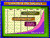
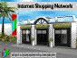
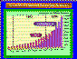

Denne økende mengden med tilbydere har selvsagt sammenheng med den økende etterspørslen etter konnektivitet blandt kommersielle firmaer. Interessen for Internet er formidabel over store deler av verden, og veksten skjer først og fremst på kommersiell- og i noen grad offentlig sektor (store deler av forsknings- og undervisningsverdenen er jo alt oppkoplet).
Disse firmaene kan ha forskjellige grunner for å ville knytte seg til nettet, men undersøkelser viser at hovedgrunnen er at de ønsker å kunne presentere, og evt. selge, varer og tjenester via nettet.
Den økende interessen for nettopp dette, har med det å gjøre at det nå er blitt enkelt for både tilbyder og konsument å operere på nettet, samtidig som man ser klare fordeler, innsparinger og evt. nye kundegrupper ved å legge ut informasjon på nettet.
 Figur 1: Vekst i antall tilknyttete nettverk
I kjølvannet av den økende tilstrømningen av nye aktører, dukker det dessuten opp helt nye forretningsområder. De mest påfallende er
Dette inkluderer sikkerhetsaspekter, oppsett av brannveggmaskiner, nettjenester etc.
Mange firmaer ønsker å presentere seg, men kan ikke eller vil ikke gå på nettet selv. De «leier» da plass hos andre.
Stordrift har vist seg lønnsomt innen vanlig varehandel og dessuten noe som kundene ønsker. Det samme ser man tendenser til på Internettet, og mange av de elektroniske markedsplassene som dukker opp er for elektroniske kjøpesentre å regne - mange firmaer holder til under samme tak og mange forskjellige forretningsområder er representert.
 Figur 2: The Internet Shopping Network
Pga. f.eks. manglende standardisering og et enormt ekspansivt informasjonsrom, er det fortsatt vanskelig å holde seg orientert om hvor og hvordan man finner informasjonen man trenger til enhver tid. Profesjonelle «information brokers» har derfor i en overgangsperiode et visst potensiale. Det finnes forøvrig også et slikt selskap i Norge.
Det dukket f.eks. nettopp opp et firma hvis forretningsidé er å designe grafikk for Web tjenere over hele verden. For tiden dukker det opp ca. 12 nye Web servere daglig, så markedet for dette og andre konsulentjenester rundt Web er opplagt til stede.
 Figur 3: Økningen i bruk av World Wide Web
{kind=link}
{kind=link}
{kind=link}